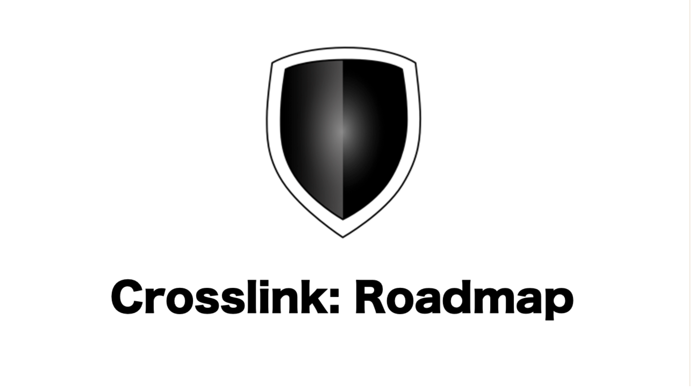

Crosslink Roadmap

For a high level overview of our roadmap, please visit this link.
Shielded Labs is committed to building Crosslink, a hybrid PoW/PoS consensus algorithm for Zcash. The first phase is the development of a complete implementation, which we are targeting for completion within 12 months. The second phase will be to productionalize it. We estimate that this second phase will take an additional 9 months. However, the exact timeline for this will depend heavily on external dependencies beyond our control.
Before we submit Crosslink to be scheduled into a Network Upgrade, we aim to have complete end-to-end functionality, including wallets, on a working testnet, which allows community members to test key features, including hybrid-consensus, staking, delegation, and more.
Throughout development, we will remain continually engaged with the ecosystem, incorporating near-constant feedback to refine our work. Even early, incomplete versions of the prototype will be structured to demonstrate partial functionality and showcase features as they are developed.
We have assembled a world-class engineering team consisting of former ECC and Equilibrium members, as well as young engineers with deep experience in compiler/debugger design and operating systems.
Given the potential impact of Crosslink, we are allocating the majority of our engineering resources to this initiative. Staking ZEC shifts sell-pressure from mining pools to buy-pressure from validators, which may positively influence market dynamics. It also increases decentralization by enabling broader participation that allows more users to engage with the network and earn rewards. Additionally, Crosslink introduces economic finality, which enhances security and unifies deposit times across exchanges and bridges. Beyond these immediate benefits, Crosslink also lays the foundation for future scalability improvements.
We view Crosslink as critical to the success of Zcash and are excited to develop it alongside other complementary protocol improvements.
Challenges and Trade-Offs
Bringing Crosslink to life requires navigating three main tensions:
- Speed vs. Quality: Delivering quickly while maintaining security and stability.
- Greenfield Development vs Upstream Compatibility: Building new infrastructure while ensuring it aligns with Zebra and existing Zcash tooling.
- Flexibility vs. Structure: Exploring design possibilities without introducing unnecessary complexity or delays.
To balance these, we are implementing the following development strategies:
- Leveraging existing tooling: Our prototype will use Malachite, a Rust crate that implements Tendermint BFT.
- RegTest mode: Use RegTest whenever possible to quickly simulate potential network events and receive fast feedback.
- Practice “Vertical Slice” methodology: Deliver incremental, functional components at each milestone rather than large overarching updates.
- Breaking changes: During the prototype development process, we may rework functionality, code, database schema, and serialization formats as needed to refine the overall design efficiently and avoid unnecessary technical debt.
The Vertical Slice
As we develop Crosslink, our goal is to ensure that even partially implemented versions remain accessible for developers and community members to interact with and test.
In addition to delivering code we will also regularly:
- Work on ZIPs related to Crosslink, soliciting early feedback from ZIP editors well before they reach maturity.
- Draft upstream PRs to run the full suite of ZcashFoundation/Zebra tests to benefit from the Zebra team’s testing infrastructure while coordinating on scheduling and resource constraints.
- Modify external dependencies such as librustzcash and zcash-devtool in Crosslink-prototype specific code forks.
- Update the Zebra and/or TFL books as needed.
- Review our documentation, design, and direction with engaged ecosystem partners, such as wallet developers, exchanges, consensus service providers, bridge and DEX developers, and more. If you are interested in becoming a stakeholder, please reach out to us!
Early Upstream PRs
In order to minimize technical integration risk for Crosslink and contribute to upstream codebases, we will seek to distill and submit generally useful, non-Crosslink specific portions of our code as early pull requests to Zebra maintainers and other open source project maintainers whenever possible.
Ideally this will benefit upstream projects (regardless of Crosslink’s status or functionality) and also ensure that once Crosslink is ready for upstream adoption, its code will be submitted in small, more focused increments that are easier to integrate.
Additionally, we see this as a good way to encourage ongoing collaboration and feedback with upstream projects, which will keep design discussions active and ensure smoother integration when Crosslink is ready for adoption.
The Roadmap
We expect to develop a complete implementation in roughly 12 months, though estimates inevitably become less certain over time.
Please note that we are coining the term “finalizer” in place of the term “validator.” In Crosslink, hybrid-consensus nodes finalize blocks, but do not validate transactions.
In addition to our roadmap, we have also prepared a scoping document that outlines the full scope of the project. This document provides further details about our goals and deliverables, which may help provide additional clarity.
Milestone 1: Placeholders and Processes
This initial milestone will provide the code structure and minimal functionality with no consensus modifications.
Status: In Progress
Estimate: 1 month
Goals:
- Establish baseline engineering practices.
- Create a placeholder Crosslink task alongside the other Zebra tasks.
- Establish release engineering (CI/CD).
- Establish a workable bidirectional collaboration process with upstream Zebra maintainers.
- Create and/or potentially update applicable RPC calls.
- Create a prototype fork of `zcash-devtool` for exercising light-client functionality from the commandline.
- Create the initial placeholder draft documentation in the Zebra book, and a top-level ZIP draft.
Milestone 2 – Disconnected BFT
This milestone will introduce BFT functionality, although Zcash’s existing consensus will be completely unaltered. In this milestone, BFT uses a “Proof-of-Authority” (PoA) roster (ie: a manually configured set of finalizer nodes) without any staking semantics. This ensures both PoW and BFT are operating in our prototype without any awareness of the BFT consensus within the existing PoW functionality. The BFT protocol will do “soft” finalization of PoW blocks, meaning a best effort will be made even though PoW will not respect this finalization status. This will be useful for testing one direction of consensus crosslinking, and will enable the introduction of “Mainnet Shadowing Mode”. Already at this stage we will be releasing a version of the software for testers to try at home.
Estimate: 2 months
Goals:
- Integrate the Malachite Rust crate, a running version of Tendermint BFT that does not yet interact with the PoW chain.
- Create what we’re calling “Mainnet Shadowing Mode” where nodes can theoretically connect to mainnet with our code running (read-only).
- Add RPC calls, logging, and cli support for querying finality status and issuing warnings when finality stalls.
Milestone 3 – PoW Consensus
This milestone includes the first modification of PoW consensus to respect the assured finality provided by the BFT protocol. The BFT protocol will still use a PoA roster with no staking semantics. In this milestone, PoW block headers and block validity rules are modified, but the transaction semantics remain unchanged from mainnet Zcash. This enables full testing of the Crosslink consensus, minus all of the staking semantics.
Estimate: 3 months
Goals:
- Modify PoW block structure for Crosslink support.
- Modify the PoW block validity rules to reject any rollback of the most recent final block.
- Feature complete “Finality Status” RPC calls.
- Implement a “contingency mode” where the PoW chain continues with coinbase-only transactions in the event of a PoS finality outage.
- Draft preliminary design for staking economics.
Milestone 4 – Staking Transaction Semantics
This milestone introduces new transaction functionality to enable all of the staking operations, such as new finalizer node registration, delegations, PoS roster selection, rewards issuance, roster evictions, and slashing. This milestone also introduces lightwallet support via the `lightwalletd`/`zaino` protocol which can be exercised by our `zcash-devtool` prototype.
Estimate: 4 months
Goals:
- Implement transaction semantics and modify transaction data.
- Finalize a rough tokenomics design including delegation, payouts, and potential slashing.
- Add delegation support to `zaino` and `zcash-devtool` to demonstrate “full stack” functionality for delegation.
Milestone 5 – Pre-Productionization, Tech Debt, Final Refactoring
In Milestone 4, our aim is a feature complete implementation. However, from our experience we anticipate unknown challenges in the design or implementation leading up to Milestone 4, so we are adding Milestone 5 to address any of those unforeseen issues prior to transitioning to production design and code. This is also the right time for governance decisions about Crosslink, such as when to activate it, prior to the Productionization Phase.
Estimate: 2 months
Goals:
- Tie up any loose ends in terms of both tech debt and unknown unknowns. Essentially this is a buffer milestone.
Productionization Phase
After Milestone 5, we will transition from the Prototype Phase to the Productionization Phase. “Productionization” refers to all effort necessary to make Crosslink ready and safe for mainnet activation. This phase requires careful coordination with other Zcash protocol developers.
Estimate: 9 months
Goals:
- Design specification, ZIP finalization.
- Merging functionality with other protocol changes slated for the same upgrade.
- Working with wallets, staking providers, and other ecosystem participants to prepare their products for activation.
- Security Proof & Analysis, Security Audits of the Design and Implementation.
… and likely more. We will work to clarify the roadmap of the Productionization Phase prior to the completion of Prototype Milestone 5.
Please let us know if you have any questions, comments, or feedback. We’ll continue to provide regular updates to the community as development progresses.